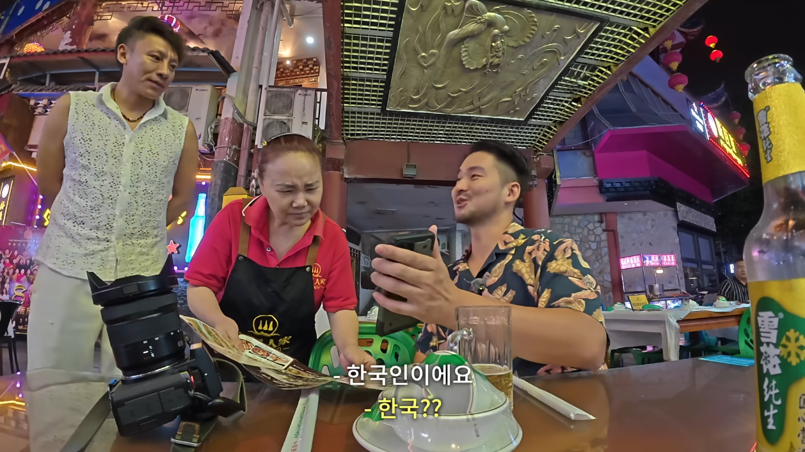
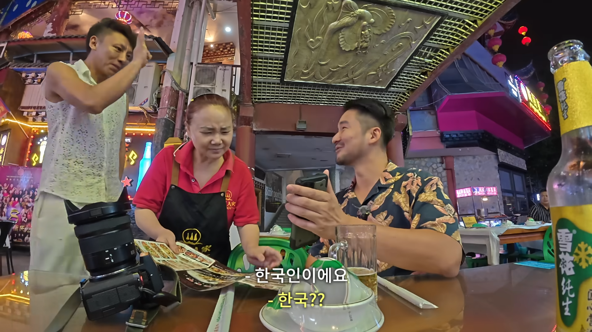
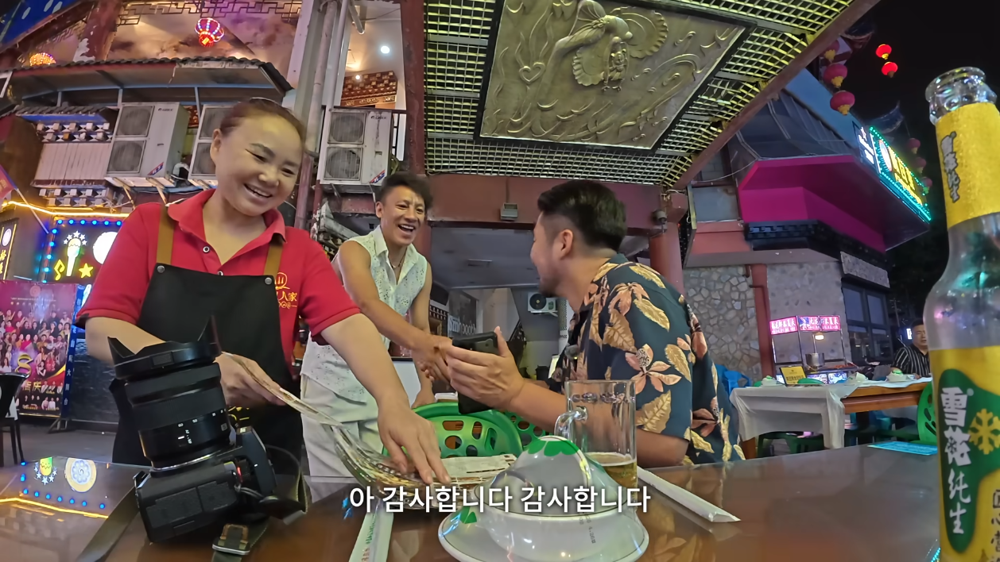
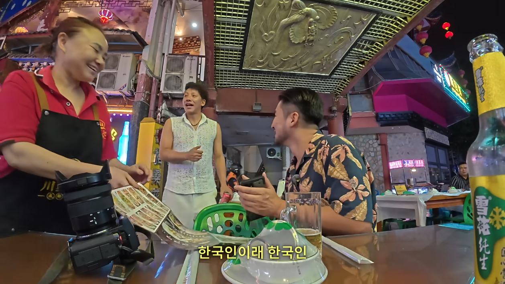
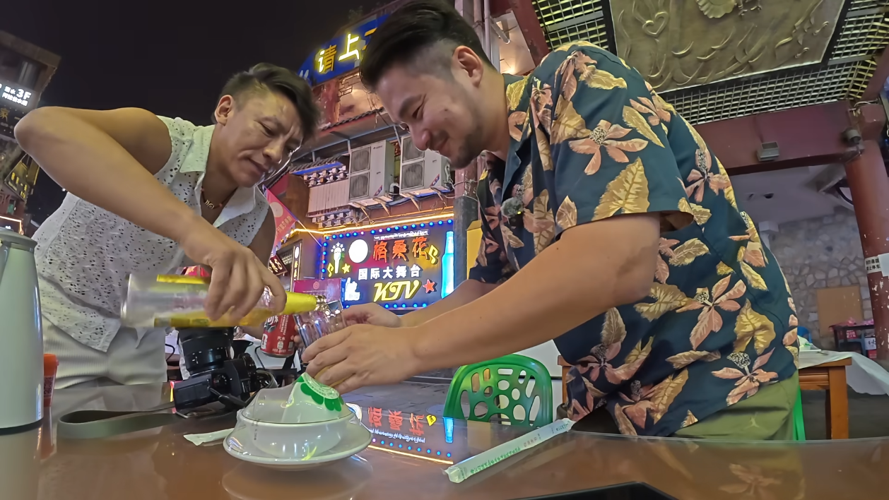
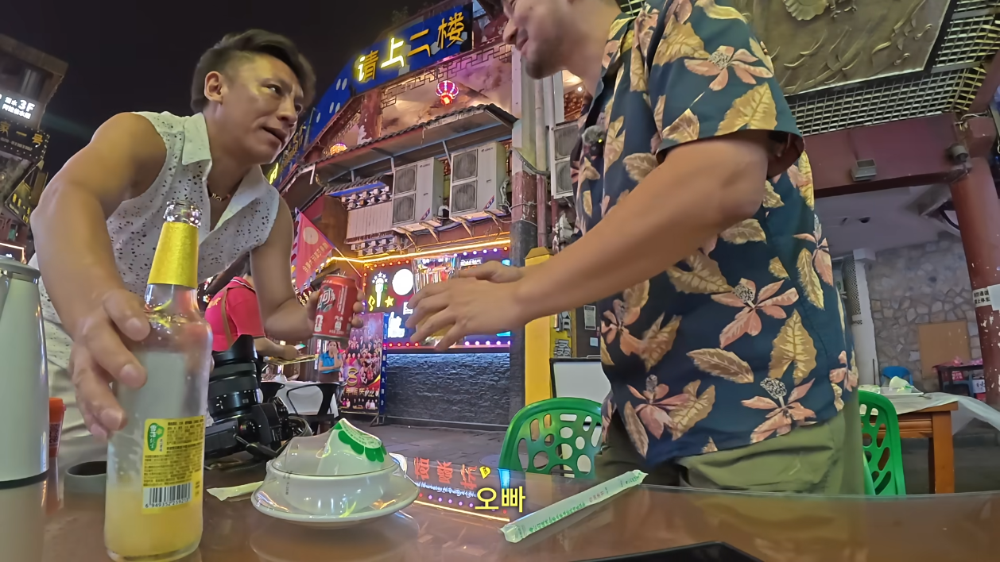
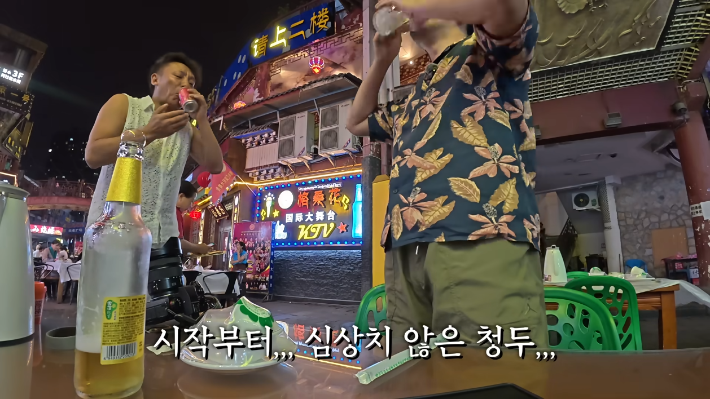
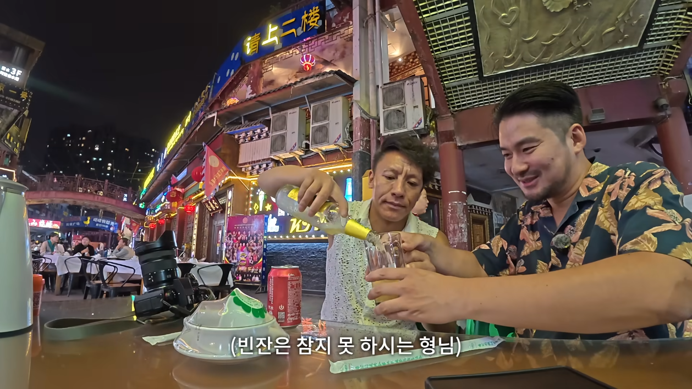

오빠








오빠
연포물개는 너무 진지하고 재미가 많이 없어 그게 큰 문제임 요즘은 아예 영상 업로드도 안 하더마
그래도 나름 EBS 세테기 출신인데 ㅜㅜ
촉빠는 ㅇㅈ이지
온라인에서는 씨발놈들만보이는데 가서 다녀보면 대부분착하다더라 한국도 온라인은 혐오만 가득한데 또 현실은 안그런거랑 비슷한듯
세상 어딜가나 병신 또라이 머저리들이 있는데 저긴 1%의 머저리만해도 수천만이라 그런듯
15억에 1%면 1500만명.
그 인구가 한국 인구의 30% 수준ㄷㄷㄷ
할거 없어서 온라인에서 죽치는 정신병자들하고 진짜 사람 하고 비교하면 안되지
중국사람들 한국인 좋아함 ㅋㅋ 일본인인지 아닌지 확인하려고 국적 종종 물어보는데 식당에서 일본인 아닌거 확인되면 서비스 많이 줌
항상 대륙남 같은 혐오로 돈 버는 영상만 줄창 보다가 김한량 중국 자전거 타고 다닐 때
정말 중국 따거 형님들 보고나서 많이 정화됨
인구가 많은데 미친놈들도 확률적으로 많은거라는 느낌
왜냐면 적당히 스트레스 받고 행복 느끼는 사람들은 인터넷에 잘 표현안하는데 개같은 놈들은 인터넷에서 살듯이 하기 때문
상해여행갔을때 시민도그렇고 종업원들도 그렇고 대체로 친절했음 억양이 화나보여서그렇지 그거랑별개로 좀 문화인은 덜된느낌 공공질서개념이 좀 약한거정도 대충 길빵하다가 인도에 탁 버리는거 커피 다먹고 놓고가는거, 우리나라도 그러긴하지만그래도 쓰레기모여있는데라던지 담배피는장소근처땅에 버리는데 걔넨 진짜 걍 쌩짜 길에다 버린게 많았음
90년대 2000년대 느낌으로 보면댐
오빠? 떽 쥐새끼 네 이놈!!! 이릉의 원수를 잊지 않았다!!
칭다오 여행때도 한명도 빠짐없이 다들 친절했음. 배달앱 사용을 못해서 호텔 직원에게 부탁할때도 흔쾌히 주문 도와주고 암튼 중국 또가고싶다
세계 어디를 가도 개새끼와 좋은 사람은 공존함
중국도 정많고 착한 사람이 더 많음
알리페이 못쓰고 얼타니까 대신 결제 해주고 공짜로 밥 주고 선물이라고 커피 사주고 택시도 대신 돈내고 태워주고 혼자 술먹고 있으니까 같이 먹자고 술값 계산해주고 통역기 써가면서 대화 한마디라도 더 하려고 해주고
일 때문에 남경 상해 분기에 한 번은 꼭 갔는데 고마운 기억만 있음
근데 담배 아무데서나 피우고 공공위생 지랄난건 안좋음 화장실 가리는 편인데 깨끗한 곳 찾아다니느라 개고생함
ㅇㅈ 헬스장 이용하려고 하는데 온통 중국어라서, 팀부동 워스한궈러 하니까 몇명이 와서 도와주더라 ㅋㅋㅋ 그 중에선 한국어 조금 아시는 분도 오셔서 도와주시고
다른 지역은 모르겠는데 베이징은 전체적으로 친절한 느낌 받음
사실 우리나라만큼 길빵 덜하고 도로사정 좋고 길거리 화장실 깨끗한 나라가 몇 없음
해외 나가면 내려놔야 함
아이고 간트야
개드립 1n년차 짱혐 max인 상태로 출장 다니는 중인데
인터넷이랑 현실은 다르더라 생각보다 상식적이고 친절함 한국인도 좋아하는 편이고
역시 촉한의 수도라 민심이 좋군
역시 역적 귀큰놈의 본거지이니 강동 쥐새끼를 찾는구만
한의 충신이신 조 승상님의 본거지였다면 없었을 일인데... 흉참하다!
사람사는거 다 똑같다
촉한의 수도 성도에 오빠라니!
뻔히 보이는 이간책이구나
뭐 다좋은데 외국에서 술 엄청먹이는건 좀 무섭
개드립에 은근 중국찬양글이있네..
뭐 완전히 한 쪽으로 치우친 것 보단 낫지 않겠냐
무조건적인 혐오나 찬양보단 중도로 바라보는게 좋지
것도 맞긴함..
찬양이라기보단 혐오가 없는 거지
촉빠는 개웃겼다 ㅋㅋㅋㅋㅋㅋㅋㅋㅋㅋㅋㅋ
'손권이 이 글을 좋아합니다'
연포물개라고 중국 여행유튜번데 초창기부터 너무 좋아하는 유튜번데 못뜨는거 슬프다
확실히 외모가 좋거나 아니면 성격이 좀 재밌어야 뜨는거같어...